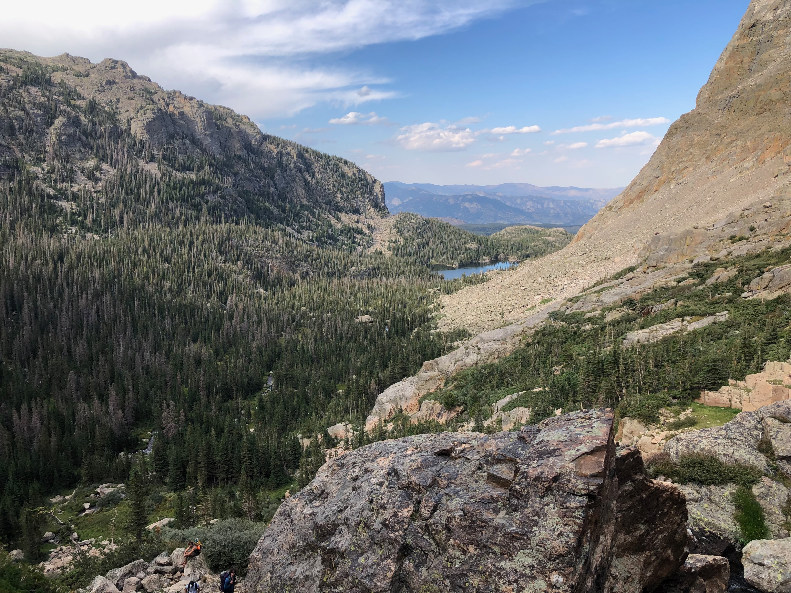
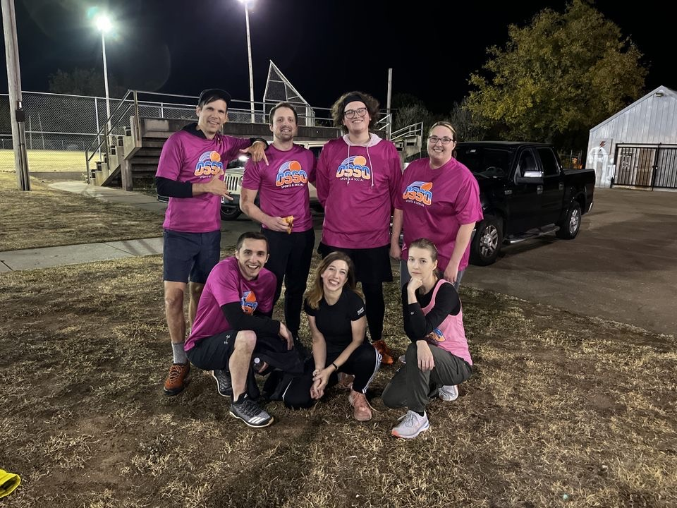
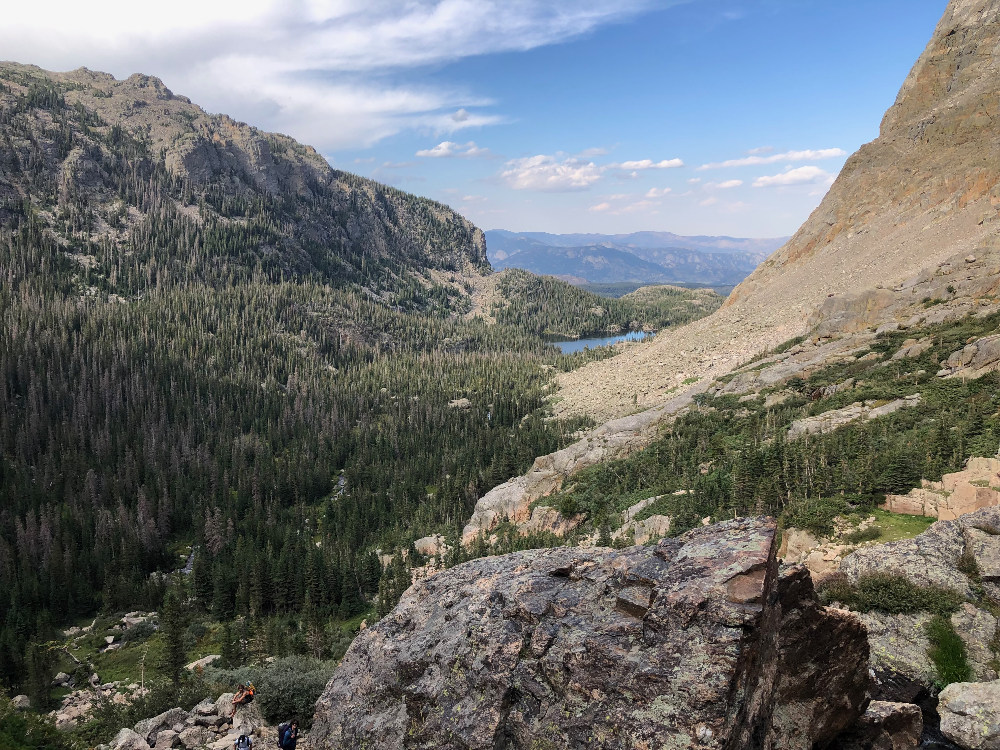
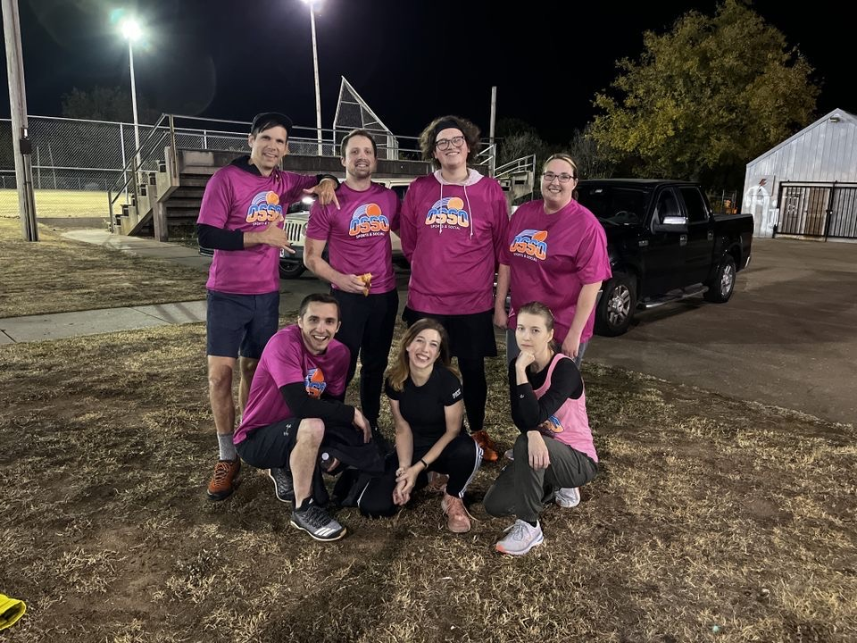

About me
I'm a web software engineer open to relocating and working on-site or remotely. I previously received my chemical engineering degree and went to work with an energy company in Tulsa. While there, I found my passion for technology systems, initially starting with business intelligence reports where I created automated reporting from various sytems. I have since worked on "low-code" user interface platforms to generate online user entry forms, have built automation systems at Oracle for a federal contract deliverables tracking system, and have coded in the data language SAS and SQL full-time, as well as Power Query M and DAX.
My goal is to take the next step and advance my passion and technical background further through a full-time software development position. Please have a look at my portfolio.
In my free time, I like doing anything active, running and biking particularly. If I get a chance I will take a trip to go hiking since there is not a lot near me. I'm in a kickball rec league and enjoy a good trivia night with friends.
Please feel free to reach out to me at any time at (918) 798-2238 or matt@pelnik.dev.
 


